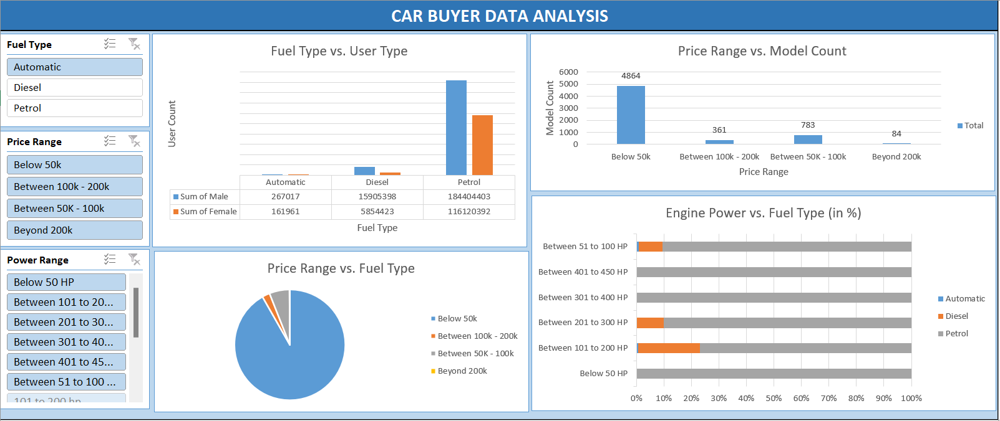

I am a passionate business analyst with a deep love for analytics and data-driven insights. My journey in the field of business analysis has equipped me with valuable skills in interpreting complex data sets, identifying trends, and making informed decisions that drive business growth. I thrive on transforming raw data into actionable strategies that optimize processes and enhance organizational performance. With a keen eye for detail and a commitment to continuous learning, I am dedicated to harnessing the power of data to uncover opportunities and solve business challenges effectively.
Project involves the comprehensive analysis of car buyer data, utilizing the powerful data manipulation and visualization capabilities of Microsoft Excel. The primary objectives are to clean the raw data, analyze key metrics, and create an interactive dashboard that provides valuable insights into car buyer trends and patterns.
Comprehensive set of SQL quick notes prepared and executed within Jupyter Notebooks using Python. By leveraging the versatility of Jupyter Notebooks and the power of SQL, this project aims to provide an interactive and efficient learning resource for SQL queries and database management.
Feel free to contact me via email or social media.
Email: shivam.hundekari@gmail.com